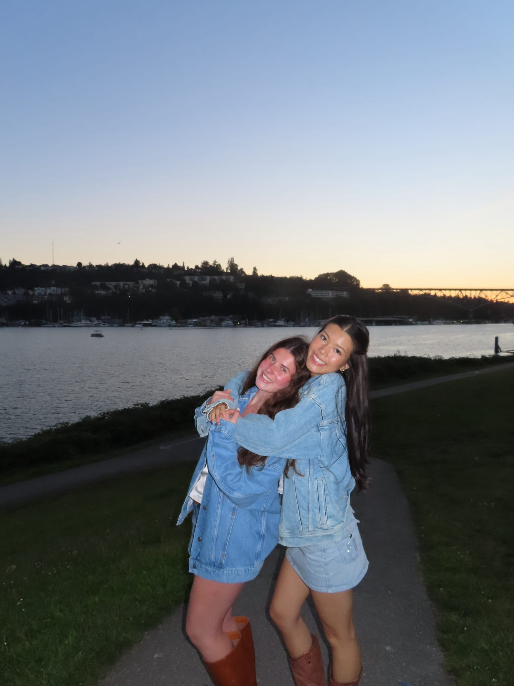

About Me
Hi, I'm Isabella! I'm studying Computer Engineering at the University of Washington. I like building things that bring hardware and software together, and I'm especially interested in sensing, robotics, and machine learning.
I've worked on projects ranging from a fingernail imaging device for anemia screening to research on ICU patient trajectories. I enjoy the hands-on process of trying an idea, figuring out why it doesn't work, and making it better.
Outside of engineering, I enjoy art, skiing, and spending time with my pets.
me and my friends + pets !
